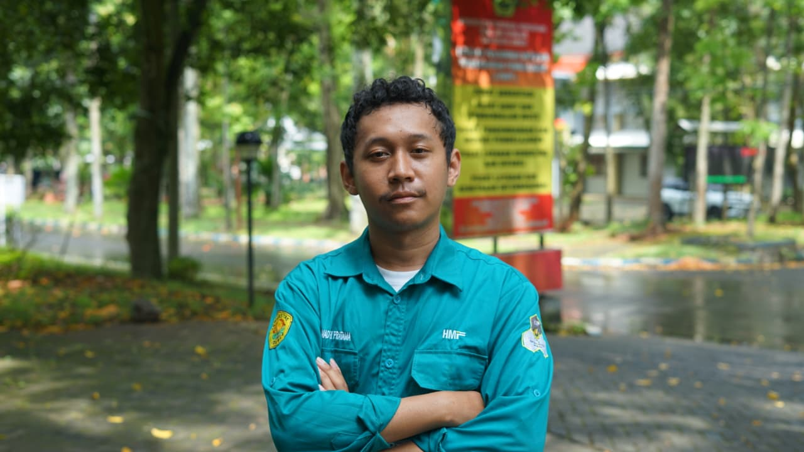

Saya adalah mahasigma Infomatika angkatan 25
Saya orang yang suka belajar dan mencoba hal-hal baru, terutama yang berhubungan dengan teknologi dan dunia digital. Saya masih dalam proses belajar dan terus mengembangkan kemampuan saya sedikit demi sedikit. Buat saya, setiap hal yang dibuat atau dipelajari adalah kesempatan untuk berkembang dan menjadi lebih baik.
Website portofolio yang berisi informasi singkat tentang saya, kemampuan yang saya pelajari, serta berbagai proyek dan karya yang telah saya kerjakan.
Sistem pencatatan data Posyandu yang membantu mengelola dan menyimpan data kegiatan serta informasi peserta Posyandu.
Sistem manajemen stok pakan untuk peternakan ayam petelur yang membantu memantau dan mengatur persediaan pakan berdasarkan prioritas stok terendah.
Berperan dalam mengelola dan mendata perlengkapan untuk mendukung kebutuhan berbagai kegiatan organisasi.
Membantu mengelola, menyiapkan, dan mendata perlengkapan yang dibutuhkan untuk berbagai kegiatan organisasi.